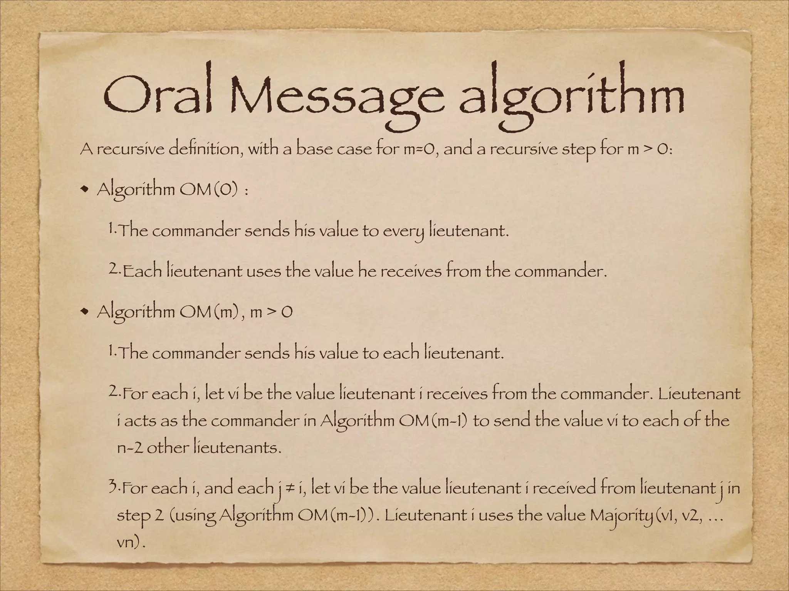
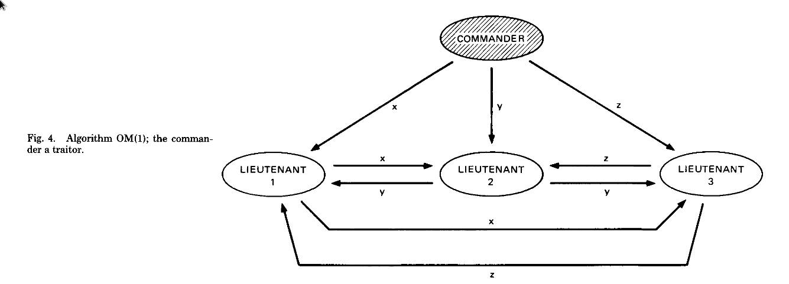
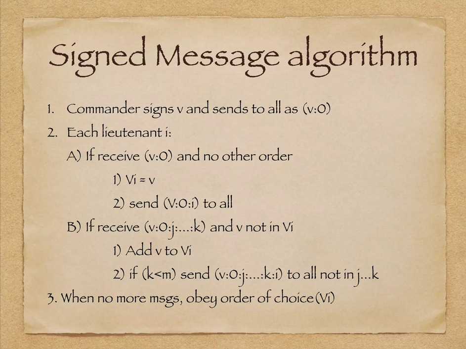

Byzantine Generals Problem
Bài toán các vị tướng quân Byzantine được đề cập như sau: Có n vị tướng quân (trong đó có một số kẻ phản bội) bao vây một tòa thành, hành động của họ được xem là thành công nếu tất cả các vị tướng quân trung thành đều đưa ra cùng 1 quyết định (tấn công hoặc rút lui). Nếu một số vị tướng quân trung thành đưa ra quyết định mâu thuẫn với các vị tướng quân trung thành còn lại thì hành động sẽ thất bại. Như vậy, để giải bài toán ta cần đảm bảo rằng:
Tất cả các vị tướng trung thành đều ra cùng một quyết định.
Một số lượng nhỏ kẻ phản bội không thể làm thất bại hành động.
Để giải bài toán trên, người ta đưa về bài toán Commander và Lieutenants. Tức là sẽ có một người đứng ra làm chỉ huy và gửi lệnh “attack” hoặc “retreat” ban đầu. Chú ý là Commander vẫn có thể là kẻ phản bội. Khi đó, người ta chuyển điều kiện lại thành:
Tất cả lieutenants thực thi cùng một lệnh (“attack” hoặc “retreat”)
Nếu Commander trung thành thì tất cả các lieutenants phải thực thi lệnh mà Commander đó gửi.
Giải thuật Oral Message:

Để sử dụng giải thuật Oral Message, người ta đặt ra các giả thiết sau:
A1. Mỗi message trong mạng được chuyển đến đúng nơi cần gửi.
A2. Người nhận message biết ai là người gửi.
A3. Có thể phát hiện sự mất mát của một số message.

Mọi người có thể xem qua hình minh họa fig.4, ở ví dụ này ta cần chạy OM(m) với m = 1. Giá trị m chính là số lượng node lỗi trong mạng mà ta ước chừng. Đầu tiên, Commander thực hiện lần lượt gửi các giá trị x, y, z cho từng lieutenant (vì Commander không trung thành nên gửi các giá trị khác nhau). Khi Lieutenant 1 nhận được giá trị x, nó trở thành Commander cho lần đệ quy OM(0) và forward giá trị x đến lieutenant 2 và 3. Tương tự lieutenant 1, sau khi lieutenant 2, 3 nhận được giá trị y, z từ Commander, nó cũng lên làm Commander cho lần đệ quy OM(0) tiếp theo và forward các giá trị nhận được. Kết thúc, cả 3 lieutenant đều nhận được giá trị {x, y, z}, không có giá trị nào chiếm đa số hết nên các lieutenant sẽ chọn giá trị mặc định, cụ thể là “retreat”. Như vậy, đảm bảo được tính đồng nhất của cả 3 lieutenant vì cả 3 đều trung thành.
Impossibility result: Người ta chứng minh được rằng, nếu chỉ sử dụng cách truyền miệng để gửi tin (không đảm bảo tính toàn vẹn của dữ liệu vì message có thể bị làm giả) thì nếu muốn chống f node bị lỗi, bắt buộc phải có tối thiểu 3f + 1 node hoạt động.
Giải thuật Signed Message:

Giải thuật Oral Message khó là do dữ liệu được truyền đi trong mạng nhưng không được đảm bảo tính toàn vẹn (ai cũng có thể giả mạo). Do vậy, người ta đưa thêm vào giả thuyết sử dụng chữ kí để dễ dàng hơn trong việc thực hiện:
A4. a. Bất kì sự thay thế nhỏ nào của message cũng có thể dễ dàng bị phát hiện.
A4. b. Bất kỳ ai cũng có thể verify tính xác thực của chữ kí.
Để hiểu sơ cách chạy của thuật toán này, mọi người xem qua fig.5. Trước tiên, có hai thứ mọi người cần phải lưu ý là hàm Choice và message (v:0:j1:j2:…:jk). Hàm choice(V) là hàm đưa ra quyết định từ các lệnh nhận được trong V. Hàm Choice(V) quy ước như sau:
Nếu V rỗng thì giá trị Choice(V) = “retreat” Nếu V chỉ chứa 1 giá trị v thì Choice(V) = v Khác hai trường hợp trên thì giá trị của Choice(V) là phần tử trung vị của V.
Còn với message (v:0:j1:j2:…jk) nghĩa là lệnh v (“attack” hoặc “retreat”) được kí bởi general 0 (hay Commander) sau đó được kí tiếp bởi lieutenant j1, … j2 … jk.
Ở fig.5, đầu tiên Commander (là kẻ phản bội) thực hiện kí và gửi (“attack”: 0) đến lieutenant 1 và (“retreat”: 0) đến lieutenant 2. Ở bước 2, vì lieutenant 1 nhận message có dạng (v:0) nên lieutenant 1 ghi nhận giá trị v (“attack”) vào V1, đồng thời kí và gửi đến lieutenant còn lại là lieutenant 2 với message (“attack”:0:1). Cũng tương tự, lieutenant 2 ghi nhận giá trị v (“retreat”) vào V2, đồng thời gửi message (“retreat”:0:2) đến lieutenant 1. Khi lieutenant 1 nhận được message (“retreat”:0:2), vì k = 1 (không bé hơn m = 1) nên dừng tại đây, cũng tương tự cho trường hợp của lieutenant 2. Đến bước 3, cả hai lieutenant thực hiện tổng hợp qua hàm Choice(Vi). Vì V1 và V2 đều là {“attack”, “retreat”} (giống nhau) nên lệnh thực hiện của cả hai lieutenant cũng giống nhau. Như vậy, tính nhất quán được đảm bảo.
Missing communication paths:
Cả giải thuật Oral Message và Signed Message ở trên đều đang xét trong trường hợp đơn đồ thị vô hướng đầy đủ, khi đó mỗi đỉnh đều có đường đi trực tiếp đến tất cả các đỉnh còn lại. Tuy nhiên, trong thực tế người ta không làm như thế mà xem xét đơn đồ thị vô hướng có bậc 3m, với m là số node lỗi. Từ đó người ta mở rộng giải thuật Oral Message xem xét trên đơn đồ thị bậc 3m và chứng minh được rằng giải thuật đó có thể chống được f node lỗi nếu đồ thị đó là đơn đồ thị vô hướng bậc 3m. Tương tự cho giải thuật mở rộng của Signed Message, mọi người nếu hứng thú có thể đọc thêm.